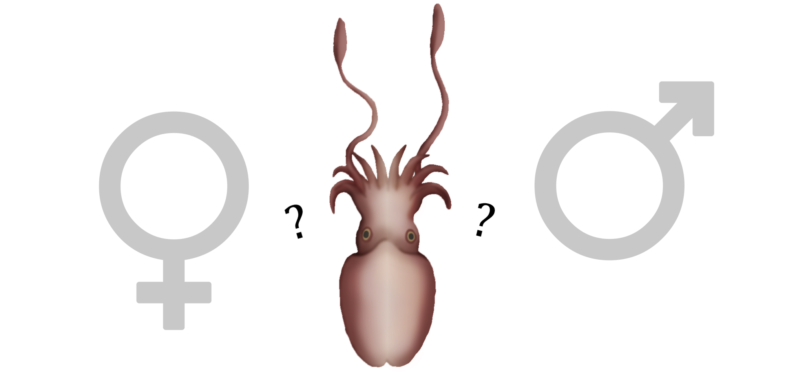
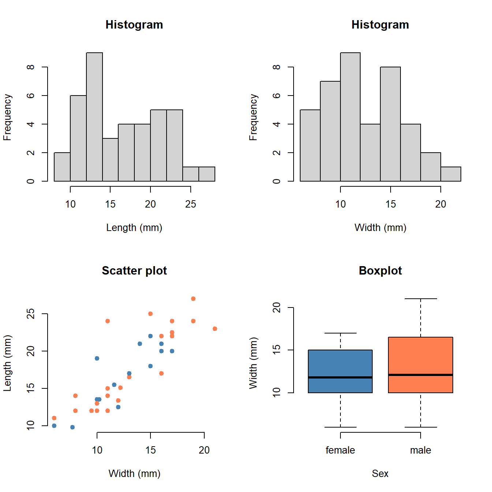

Chapter 6 Sepia
Date: 16/17 March 2022 (Animal Biodiversity course)
Topic: Data manipulation, \(t\)-test (tutorial )
Duration: 60–90 minutes

Does the common cuttlefish (Sepia officinalis) display sexual dimorphism? Are males perhaps taller or wider? In this chapter, you are going to scientifically compare two groups of measurements.
6.1 Getting Started
The first step is to correctly read your data into the software:
- If you haven’t already, install RStudio;
- Download the data. If it is an Excel (.xlsx) file, open it in Excel and save as CSV;
- Open RStudio and create a new R markdown file. Save this file to the same folder as the data!
- Go to Session > Set Working Directory > To Source File Location. R now knows where to locate your data;
- Create a new code chunk and run the following:
Sepia <- read.csv("Sepia.csv")(This only works for CSV files. If it doesn’t work, you probably have a Dutch version of Excel, in which case read.csv2() should work instead.)
This requires that your CSV file is also called “Sepia”.
From here on out, just read the text, run the code in R, adjust the R code if needed, and answer the questions.
If you can’t find the data on Brightspace, you can download it here (make sure to rename it from “Sepia2223.csv” to “Sepia.csv”).
If the code ran successfully, you will have an object called Sepia in your workspace. You can view it by clicking it, or by running:
View(Sepia)Does R understand which variables are numbers and which are something else? Let’s check:
str(Sepia)## 'data.frame': 174 obs. of 6 variables:
## $ Group : int 1 1 1 1 1 1 1 1 1 1 ...
## $ Student: int 1 2 3 4 5 6 7 8 9 10 ...
## $ Sex : chr "male" "" "female" "" ...
## $ Length : num 22.5 NA 20 NA NA 22 NA 17 NA 12 ...
## $ Width : num 17 NA 17 NA NA 16 NA 16 NA 8 ...
## $ Comment: chr "" "" "" "" ...Question:
- Is the data read correctly into R? How can you tell?
- What do you think
chrandintmean?
6.2 Creating a Subset
We just read the whole data set. It contains the data from both groups. Let’s make a subset of the measurements performed by your group:
Subset <- Sepia[Sepia$Group == 1, ](If you are in Group B, change 1 to 2.)
What does this code do?
Subset <-: Create a object namedSubset;Sepia[x, y]: From the data setSepia, select only rowsxand columnsy. Ifyis left blank, it selects all columns;10Sepia$Group == 1: From the data setSepia, select the variableGroupand check if it is equal to the value1(TRUE) or not (FALSE).
Did that work? You can check by comparing the number of rows in both objects:
nrow(Sepia)## [1] 174nrow(Subset)## [1] 94That number should match the number of students in your group.
6.3 Data Cleaning
Usually this is where you would have to spend considerable time fixing small mistakes in the data, like some students typing “male” (lowercase), others “Male” (uppercase), etc. Fortunately for you, in this year’s version the data has already undergone some precleaning.
There is, however, one suspicious thing still going on in the data. Namely, a lot observations appear duplicated! See for example the following rows:
Sepia[105:110, ] # Print rows 105 to 115## Group Student Sex Length Width Comment
## 105 2 11 female 21.0 19
## 106 2 12 female 21.0 19
## 107 2 13 male 16.5 14
## 108 2 14 male 16.5 14
## 109 2 15 female 12.5 10
## 110 2 16 female 12.5 10I’m assuming what happened is that students worked in pairs 1–2, 3–4, 5–6, etc., which appears to be the case if you inspect the data.
There are different ways to fix this:
- Remove all duplicated length-width-sex combinations; (not safe, real duplicates are possible due to rounding, and some pairs both measured the same Sepia with different measurement error)
- Choose on a case-by-case basis; (safest, but tedious)
- For every student pair, average the results, omitting empty rows. (safe if my assumptions about student pairs is correct and there is an even number of students)
Here is how you could do that (choose one option):
Remove all duplicates
# Remove all duplicates (easiest, but not safe):
Cleaned <- Subset[!duplicated(Subset[, c("Sex", "Length", "Width")]), ]Select manually
# Select manually (oh man... good luck)
keep <- c(1, 2, 6, 8) # add as many as you like/trust
Cleaned <- Subset[keep, ]Average per student pair
(This requires some more code.)
# 1. Use the modulo operator to find odd and even
odd <- (1:nrow(Subset) %% 2) == 1
even <- (1:nrow(Subset) %% 2) == 0
# 2. Create a copy of the data with only the odd rows
Cleaned <- Subset[odd, ]
# 3. Fill in empty values for sex with the even ones
odd_sex <- Subset$Sex[even]
Cleaned$Sex[Cleaned$Sex == ""] <- odd_sex[Cleaned$Sex == ""]
# 4. Create an object with pairs next to each other (column bind)
paired <- cbind(Subset$Length[odd], Subset$Length[even])
# 5. Average the odd and even lengths (applies the function 'mean' to each row)
Cleaned$Length <- apply(paired, 1, mean, na.rm = TRUE)
# 6. Do the same for Width
paired <- cbind(Subset$Width[odd], Subset$Width[even])
Cleaned$Width <- apply(paired, 1, mean, na.rm = TRUE)
# 7. NaN (not a number) can give problems later on,
# let's convert that to NA (not available) instead
Cleaned$Length[is.nan(Cleaned$Length)] <- NA
Cleaned$Width[is.nan(Cleaned$Width)] <- NA
# 8. Remove empty rows (select rows where Sex is not empty)
Cleaned <- Cleaned[Cleaned$Sex != "", ]6.4 Plotting the Data
Just looking at code and numbers is a bit stale. So let’s make some relevant plots:
par(mfrow = c(2, 2)) # Plot in a 2x2 grid
hist(Cleaned$Length, col = "lightgray")
hist(Cleaned$Width, col = "lightgray")
plot(Length ~ Width, data = Cleaned, col = factor(Sex), pch = 1)
boxplot(Width ~ Sex, data = Cleaned, col = c("blue", "orange"))
par(mfrow = c(1, 1)) # Restore the default
Question:
- What does each plot show?
- There is at least one outlier in the data. Can you identify it from the plot? If you believe this value to be really this large, leave it as it (you can ask the students that measured it). If you don’t trust this observation, you can set it to
NAas shown above. - Can you change the code to alter the figures? (You can try changing the variable names, or change the graphical parameters.)
6.5 T-test
How do we compare measurements of two groups? One way to do that is through a \(t\)-test. To choose the right \(t\)-test, you should understand five choices:
- Do you need a one-sample, or two-sample \(t\)-test?
- Do you want to test one-sided or two-sided?
- Is it reasonable to assume equal variance?
- Are the measurements independent or paired?
- Is the underlying assumption of normality reasonable?
Do you remember all of those choices? Is so, impressive! If not, you can rewatch the video version of the lecture here:
6.5.1 Example
Below is an example of a \(t\)-test, using some standard data in R:
t.test(extra ~ group, data = sleep, alternative = "less", var.equal = TRUE)##
## Two Sample t-test
##
## data: extra by group
## t = -1.8608, df = 18, p-value = 0.03959
## alternative hypothesis: true difference in means between group 1 and group 2 is less than 0
## 95 percent confidence interval:
## -Inf -0.1076222
## sample estimates:
## mean in group 1 mean in group 2
## 0.75 2.33This particular \(t\)-test is a one-sided \(t\)-test for equal variance. Here’s how to interpret the output: The mean of group 1 is \(0.75\) hours of extra sleep, while the mean of group 2 is \(2.33\). The \(p\)-value for this test is \(0.0396\). If we use a level of significance of \(\alpha = 0.05\), then group 2 is has a significantly larger mean than group 1, because \(0.0396 < 0.05\).
6.5.2 Exercise
Question:
Choose a \(t\)-test you deem appropriate for:
- Comparing male and female length;
- Comparing male and female width.
(They could be the same, just explain briefly why you chose a certain \(t\)-test.)
Question:
- Perform the tests you chose for (1) and (2) in R and draw a conclusion. Have a look at how the example was coded using the
dataargument and adjust it to make it work for the data of your group (Subset). You may use the same level of significance \(\alpha = 0.05\). - Did we now prove that Sepia males and females differ in physical dimensions? Did we prove they are the same? What is the right way to express the conclusion?
- Adapt the code from 6.2 to create a subset of your table only. Compare your results with at least one other table. If your conclusion differs, can you explain why?
- (Optional) You performed two tests. That means that both can result in a false positive. With \(\alpha = 0.05\), what is the chance of at least one false positive when performing two tests?
Whenever you see square brackets in R, just think of them as “where”. A data frame has both rows and columns, so for example
X[1, 1]means row 1, column 1.X[1, ]means row 1, all columns, andX[, 1]means all rows, column 1.↩︎